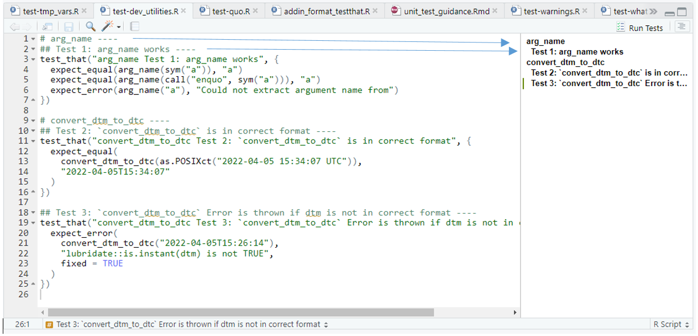
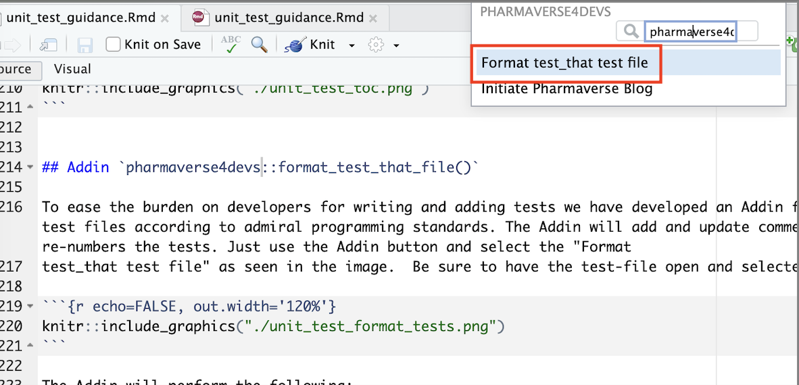

Why Write Unit Tests?
Unit Tests Become a Safety Net for Developers
A comprehensive suite of unit tests can act as a safety net for developers. By frequently running the tests, they can assure their recent modifications to the code haven’t broken anything. In other words, unit tests help prevent regressions.
Unit Tests Can Contribute to Higher Code Quality
Since unit tests act as a safety net, developers become more confident when changing the code. They can refactor the code without fear of breaking things, driving the general quality of the code base up.
Writing Good Unit Tests
Tests Should Be Fast
If they’re slow, developers won’t run them as often as they should. That defeats the whole purpose of having a suite of unit tests in the first place, which is to boost the developers’ confidence to make changes to the code. The tests can’t work as the safety net if they’re not run often.
Tests Should Be Simple
There are several techniques we can apply to have a high degree of confidence in the correctness of our tests. One of those is to keep your tests with low cyclomatic complexity. Cyclomatic complexity is a code metric that indicates the number of possible execution paths a given method can follow. A piece of code with lower complexity is easier to understand and maintain, which means developers are less likely to introduce bugs when working on it. We can measure the cyclomatic complexity of your tests (using, for instance, a linter tool) and do your best to keep it low.
Test Shouldn’t Duplicate Implementation Logic
If the same person wrote both the test and the implementation, it’s possible they made the same errors in both places. Since the tests mirror the implementation, they might still pass, and the implementation could be wrong, but the tests might fool you into thinking otherwise. Resist the urge to make your tests fancy, keep them simple, and your testing suite will be better for it.
Writing Unit Tests in {admiral}
Plan your Unit Tests
Start by considering the derivation rule you are testing and the possible arguments/flexibilities of your function code. Then plan which scenarios you will test. These can either involve generating different input test cases or feeding them into different calls of your function.
Test coverage
Unit tests should cover the functionality of the function. If another
function g() is called within a function f(),
the unit tests of f() should not test the functionality of
g(). This should be tested by the unit tests of
g(), i.e. unit tests should be added at the lowest
level.
Tests Should be Robust to Cover Realistic Data Scenarios
For generating input test cases, it can be helpful to consider regular cases (expected common data scenarios), boundary cases (where data points are close or equal), and special cases (uncommon but valid data scenarios, e.g. missing or special characters). Although you will never cover every single eventuality of possible input data (no reliability testing method ever gives 100% certainty), you do need to give confidence that the code is robust enough to work across most data scenarios.
Testing Should Cover Possible Arguments
For the different calls of your function, consider how the user might apply your function and test a variety of possible calls, whilst still remembering the tips above that tests should be fast and simple. This is only needed in cases where the complexity and level of flexibility of your function justifies it, e.g. see the test script: https://github.com/pharmaverse/admiral/blob/main/tests/testthat/test-derive_var_extreme_flag.R.
Snapshot Testing
Standard unit tests are not always convenient to record the expected behavior with code. Some challenges include:
- Output that is large, making it painful to define the reference output, and bloating the size of the test file and making it hard to navigate.
- Text output that includes many characters like quotes and newlines
that require special handling in a string.
- Binary formats like plots or images, which are very difficult to describe in code: i.e. the plot looks right, the error message is useful to a human, the print method uses color effectively.
For these situations, testthat provides an alternative mechanism: snapshot tests. Snapshot tests record results in a separate human readable file and records the results, including output, messages, warnings, and errors. Review the {testthat} snapshot vignette for details.
Set up the Test Script
Within the tests/testthat folder of the project, add a
script with the naming convention
test-<script_containing_function>.R., the unit test
script can be created from the console also, as follows:
usethis::use_test("<script_containing_function>")the testing framework used is testthat and has the following format :
## Test 1: <Explanation of the test> ----
test_that("<function_name> Test 1: <Explanation of the test>", {
input <- dplyr::tribble(
~inputvar1, ~inputvar2, ...
<Add Test Data Scenarios>
...
)
expected_output <- mutate(input, outputvar = c(<Add Expected Outputs>))
expect_dfs_equal(<function name>(input), expected_output)
})For example, if you are testing a function called
my_new_func that is contained in script
all_funcs.R then from console use:
usethis::use_test("all_funcs")Open the newly created file test-all_funcs.R and use the
following format:
# my_new_func ----
## Test 1: <Explanation of the test> ----
test_that("my_new_func Test 1: <Explanation of the test>", {
input <- dplyr::tribble(
~inputvar1, ~inputvar2, ...
<Add Test Data Scenarios>
...
)
expected_output <- mutate(input, outputvar = c(<Add Expected Outputs>))
expect_dfs_equal(<function name>(input), expected_output)
})Note: When comparing datasets in
admiral we use function
expect_dfs_equal().
The input and expected output for the unit tests must follow the following rules:
- Input and output should be as simple as possible.
- Values should be hard-coded whenever possible.
- If values need to be derived, only unit tested functions can be used.
In contrast to the Programming
Strategy documentation for function examples, test files should not
include library(pkg_name) calls. If a dataset needs to be
created for testing purposes, it should be done so using the function
tribble() from the tibble package with the
following command dplyr::tribble(<data here>).
Furthermore, if other functions need to be called, it should also be
done using pkg_name::fun()notation. Make sure to align
columns as well. This ensures quick code readability.
Ensure you give a meaningful explanation of the test in the testthat call, as these will be compiled in the package validation report. Having the name of the function and test ID included in title will also help with traceability.
The comments ending with ---- create entries in the TOC
in RStudio.

Addin pharmaverse4devs::format_test_that_file()
To ease the burden on developers for writing and adding tests we have developed an Addin for formatting test_that test files according to admiral programming standards. The Addin will add and update comments as well as number or re-numbers the tests. To access the Addin, be sure to install the {pharmaverse4devs} from Github.
To install the latest development version of the package directly from GitHub use the following code:
if (!requireNamespace("remotes", quietly = TRUE)) {
install.packages("remotes")
}
remotes::install_github("pharmaverse/pharmaverse4devs")Then use the Addin button and select the “Format test_that test file” as seen in the image. Be sure to have the test-file open and selected when calling the Addin.

The Addin will perform the following:
- Updates or adds the number of the tests in the comments and in the
test_that()call - Updates the comments based on the description provided in the
test_that()call - Updates the function name in the
test_that()call. The function name is extracted from the last# <function name> ----comment before thetest_that()call. If a test file tests more than one function, such comments should be added before the first test of each function. If a test files tests a single function only, the comments can be omitted. In this case the addin determines the function name from the file name by stripping of the “test-” prefix and the “.R” suffix.
When writing new unit tests, just provide a description in the
test_that() call and if necessary the function name in a
# <function name> ---- comment:
# derive_vars_merged ----
test_that( "works if it merges all variables", {
actual <- derive_vars_merged(advs,
dataset_add = adsl,
by_vars = exprs(STUDYID, USUBJID)
)
# convert_dtm_to_dtc ----
test_that("works if dtm is in correct format", {
expect_equal(
convert_dtm_to_dtc(as.POSIXct("2022-04-05 15:34:07 UTC")),
"2022-04-05T15:34:07"
)
})
test_that("Error is thrown if dtm is not in correct format", {
expect_error(
convert_dtm_to_dtc("2022-04-05T15:26:14"),
"lubridate::is.instant(dtm) is not TRUE",
fixed = TRUE
)
})Call the addin and get:
# derive_vars_merged ----
## Test 1: derive_vars_merged ----
test_that( "derive_vars_merged Test 1: it merges all variables", {
actual <- derive_vars_merged(advs,
dataset_add = adsl,
by_vars = exprs(STUDYID, USUBJID)
)
# convert_dtm_to_dtc ----
## Test 2: works if dtm is in correct format ----
test_that("convert_dtm_to_dtc Test 2: works if dtm is in correct format", {
expect_equal(
convert_dtm_to_dtc(as.POSIXct("2022-04-05 15:34:07 UTC")),
"2022-04-05T15:34:07"
)
})
## Test 3: Error is thrown if dtm is not in correct format ----
test_that("convert_dtm_to_dtc Test 3: Error is thrown if dtm is not in correct format", {
expect_error(
convert_dtm_to_dtc("2022-04-05T15:26:14"),
"lubridate::is.instant(dtm) is not TRUE",
fixed = TRUE
)
})Once you have tested your unit test program, you can run all unit tests from the console, as follows.
devtools::test()For running just the tests of the current file call
devtools::test_file()